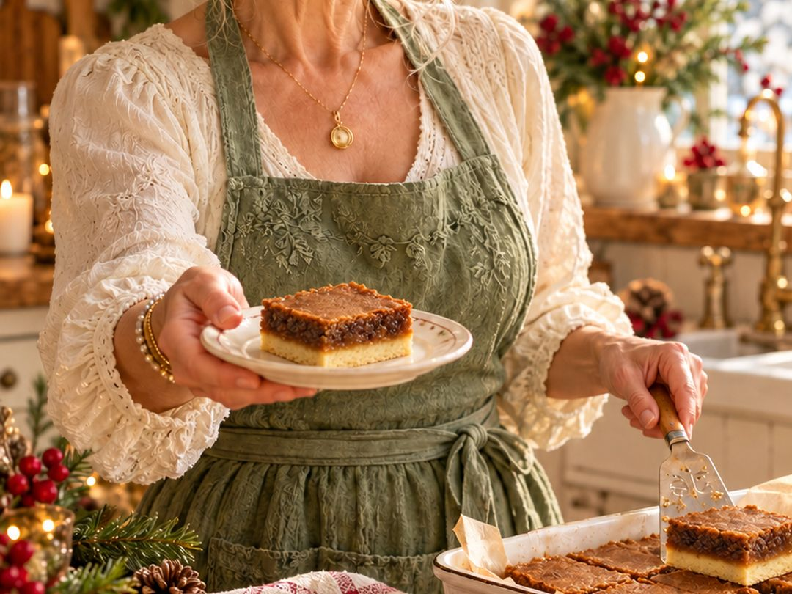

Canadian classic · 9 × 9 pan
Butter Tart Bars
Love butter tarts but not the fiddly pastry? These bars give you all the gooey, brown-sugar goodness in a fraction of the time. Press the base, pour the filling, and let the oven do the rest.

Ingredients
Base
- ½ cup butter, margarine or vegan butter
- ⅓ cup packed brown sugar
- 1¼ cups all-purpose flour
Butter tart filling
- 2 large eggs
- 1 cup packed brown sugar
- ¼ cup all-purpose flour
- ¾ teaspoon baking powder
- ¼ teaspoon salt
- 1¼ cups raisins
- ½ cup chopped walnuts
Instructions
- Preheat the oven to 350°F (175°C).
- Make the base: mix the butter, brown sugar and flour until crumbly. Press evenly into an ungreased 9 × 9-inch pan.
- Bake the base for 10 minutes.
- Make the filling while the base bakes: beat the eggs and brown sugar together, then stir in the flour, baking powder, salt, raisins and walnuts.
- Spread the filling evenly over the warm base.
- Bake again for about 30 minutes, until the top is golden brown and the centre is almost firm.
- Cool completely in the pan before cutting into squares.
Let them cool completely before you cut them. Warm butter tart filling has a mind of its own, and patience gives you neat squares instead of a delicious puddle.
Good to know
A Canadian classic
Butter tarts are one of Canada's best-loved desserts, with recipes going back to the early 1900s. Every family has an opinion about raisins, nuts and how runny the filling should be. These bars give you the same brown-sugar filling with an easy pressed base instead of pastry.
Raisins or not?
This recipe uses raisins and walnuts. Not a raisin family? Leave them out and use chopped pecans or extra walnuts. For plumper raisins, cover them with hot water for 10 minutes, then drain and pat them dry before adding.
Storing
Keep the bars covered at room temperature for 2 to 3 days, or in the fridge for up to a week. Many people like them cold from the fridge.
Freezing
Wrap the cooled bars well and freeze for up to 3 months. They thaw in about an hour on the counter.
Questions people ask
How do I know when butter tart bars are done?
The top should be golden brown and the centre almost firm, with only a slight wobble. The filling sets more as it cools.
Why is my filling runny?
Most often the bars were cut while still warm. Cool them completely in the pan, an hour or more, before cutting. A few extra minutes in the oven also helps if the centre was still very wobbly.
Can I use pecans instead of walnuts?
Yes. Pecans are a lovely swap and give a flavour a little like pecan pie.